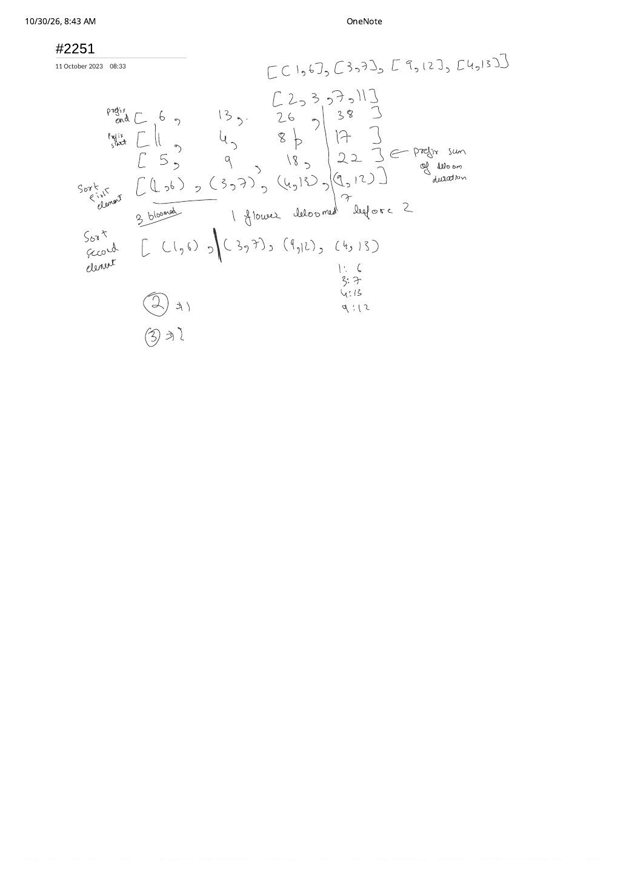

LC 2251: Number of Flowers in Full Bloom — Decoupling Starts & Ends on the Timeline
Expanded from handwritten competitive coding study note: 07_2251.pdf
1. Problem Statement & Constraints
You are given a 0-indexed 2D integer array flowers ($1 \le n \le 5 \times 10^4$), where $\text{flowers}[i] = [\text{start}_i, \text{end}_i]$ ($1 \le \text{start}_i \le \text{end}_i \le 10^9$) means flower $i$ is in full bloom over the inclusive time interval $[\text{start}_i, \text{end}_i]$. Given a query array people ($1 \le q \le 5 \times 10^4$, $1 \le \text{people}[j] \le 10^9$), return an array where entry $j$ is the number of flowers in full bloom at arrival time $t = \text{people}[j]$.
2. Scratchpad Progression: Why Dense Prefix Arrays Fail & Endpoint Decoupling Wins
- Brute Force ($\mathcal{O}(n \cdot q)$): Testing $\text{start}_i \le t \le \text{end}_i$ across all $5 \times 10^4$ flowers for each of $5 \times 10^4$ people performs $2.5 \times 10^9$ checks and TLEs.
- Dense Difference Array ($\mathcal{O}(\max \text{end}_i)$ Memory — MLE!): Allocating
diff[0 .. 10^9]requires $4\text{ GB}$ of RAM. Notice also the top of07_2251.pdfonflowers = [[1, 6], [3, 7], [9, 12], [4, 13]]: taking prefix sums of end times ([6, 13, 26, 38]), start times ([1, 4, 8, 17]), or bloom durations ([5, 9, 18, 22]) sums lengths rather than point concurrency, prompting the pivot directly below it on the page! - Optimal Breakthrough in
07_2251.pdf— Sort First Elements & Sort Second Elements Separately ($\mathcal{O}((n + q)\log n)$): Look at the underlined annotation in the middle of the scan for query $t = 7$: "3 bloomed — 1 flower debloomed — left are 2!"
Formal Proof of the Bloomed-Minus-Debloomed Identity
Let $A(t) = \{i : \text{start}_i \le t\}$ be the set of flowers that have already started blooming at or before time $t$, and let $B(t) = \{i : \text{end}_i \lt t\}$ be the set of flowers that have already finished blooming strictly before $t$.
Because every valid interval satisfies $\text{start}_i \le \text{end}_i$, any flower with $\text{end}_i \lt t$ automatically satisfies $\text{start}_i \le \text{end}_i \lt t \implies B(t) \subseteq A(t)$! Therefore, the set of currently active flowers $A(t) \setminus B(t)$ has exact size:
Because $|A(t)|$ depends only on the multiset of start coordinates and $|B(t)|$ depends only on the multiset of end coordinates, we can decouple each interval $[\text{start}_i, \text{end}_i]$ into two independent sorted 1D arrays starts and ends and evaluate each term in $\mathcal{O}(\log n)$:
- $\bigl|\{i : \text{start}_i \le t\}\bigr| =$
upper_bound(starts, t)(index of first start $\gt t$). - $\bigl|\{i : \text{end}_i \lt t\}\bigr| =$
lower_bound(ends, t)(index of first end $\ge t$).
3. Step-by-Step Dry Run on [[1, 6], [3, 7], [9, 12], [4, 13]]
starts = [1, 3, 4, 9] and sorted ends = [6, 7, 12, 13]: for people = [2, 3, 7, 11], subtracting lower_bound(ends, t) from upper_bound(starts, t) yields [1, 2, 2, 2].4. Clean C++ Implementation
// LC 2251: Number of Flowers in Full Bloom — O((n + q) log n) Time, O(n) Space
#include <algorithm>
#include <vector>
using namespace std;
class Solution {
public:
vector<int> fullBloomFlowers(vector<vector<int>>& flowers, vector<int>& people) {
int n = (int)flowers.size();
vector<int> starts(n), ends(n);
for (int i = 0; i < n; ++i) {
starts[i] = flowers[i][0];
ends[i] = flowers[i][1];
}
sort(starts.begin(), starts.end());
sort(ends.begin(), ends.end());
vector<int> ans;
ans.reserve(people.size());
for (int t : people) {
int bloomed = int(upper_bound(starts.begin(), starts.end(), t) - starts.begin()); // start <= t
int debloomed = int(lower_bound(ends.begin(), ends.end(), t) - ends.begin()); // end < t
ans.push_back(bloomed - debloomed);
}
return ans;
}
};5. Complexity Proof & Key Edge Cases
- Time Complexity — $\mathcal{O}((n + q)\log n)$: Sorting
startsandendstakes $\mathcal{O}(n \log n)$, and each of the $q$ queries runs two $\mathcal{O}(\log n)$ binary searches. (Note: unlike offline sweep-line + min-heap which takes $\mathcal{O}(n \log n + q \log q)$, endpoint binary search answers queries online in any order without sortingpeople!) - Space Complexity — $\mathcal{O}(n)$: Two integer vectors of length $n$, completely independent of the $10^9$ coordinate range!
- Key Edge Cases:
- Inclusive Right Endpoint ($t == \text{end}_i$, e.g. $t = 7$ on
[3, 7]): Usinglower_bound(ends, 7)counts only ends strictly less than $7$ (6), keeping flower[3, 7]active at $t = 7$! Accidentally usingupper_boundon both arrays would treat intervals as half-open $[\text{start}_i, \text{end}_i)$ and undercount boundary arrivals. - Zero-length bloom
[5, 5]queried at $t = 5$:upper_bound([5], 5) = 1andlower_bound([5], 5) = 0$\implies 1 - 0 = 1$.
- Inclusive Right Endpoint ($t == \text{end}_i$, e.g. $t = 7$ on
From the Handwritten Notes
View original handwritten page — 07_2251.pdf (Sorting bloom starts & ends: bloomed minus debloomed)


07_2251.pdf: Exploring prefix sums before pivoting to "Sort first element" & "Sort second element" on [[1,6],[3,7],[9,12],[4,13]] ("3 bloomed, 1 flower debloomed, left are 2").